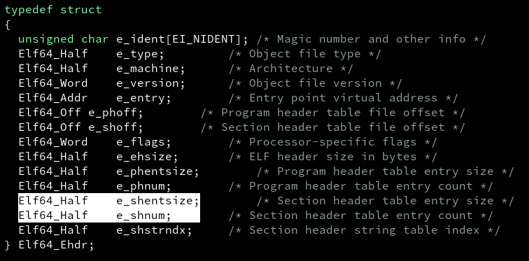

Finally after few months I'm bringing a new post, this time we'll explore one of the most popular and used binary formats out there, we'll learn about the ELF format.! Originally, this was going to be only 1 post, but after a couple of days writing it, I realized that this post became the larger one I've written and it was not even the 40% of the stuff I wanted to cover, so I decided to divide this into a series of posts. Specifically, we'll explore what a binary format is, what the ELF format is, what it is used for, and in this first post of the series I'll explain in detail the first component of any ELF file, the Executable Header. Then I'll show a utility called readelf, which is used to read all the information from any ELF binary file, to explore the executable header from a real binary.! So without further ado, let's go for it.!First of all, what's a file?
In simple words, you can define a file as a bunch of ordered bytes that holds some sort of data and represents something useful for us, let's say, a text document, a picture, a video and so on. So, as simple as that, for your computer a file is just a bunch of bytes. Every person that uses a any sort of computer (a PC desktop, a laptop, even your smartphone) deals every day with all sort of files, but we see them as the thing they represent: a PDF file, a Word document, it might be a multimedia file such as images or video as well.So, what's a file format?
Ok so, if files are just a bunch of bytes, how do we differentiate them? Why is it that you need to use specific programs to open specific files? The thing is that the bytes that compose a file are not random bytes, they follow a well defined order and structure so computer programs can handle them. The file format is the standard structure/encoding that the bytes from a file shall follow to compose a valid file. That way, the file format for PDF files is just the way that the bytes from any PDF file shall be structured to construct a valid PDF file. Same thing applies for Word documents, Excel data sheets, image files (png, jpg, ...), and so on. The programs you use to open and modify your files expect that the file you are trying to work with follows the required file format so it can be correctly processed. Many file formats are described in a specification document to standarize such format and avoid to have many implementations for a single file format.Binary files and binary file formats.
A binary file is just another type of file, with the singularity that this type of file contains machine code, data and extra information that your operating system can use to execute it as a program. The binary file format, or the binary format, is just the format that such data, machine instructions and extra information from the file shall follow to be handled and executed by your OS. There is more than one binary format out there (I don't know how many binary formats exist indeed), where the PE and the ELF formats are the most popular ones. PE stands for Portable Executable and it's the main binary format used for Windows binary files. In the other hand, ELF stands for Executable and Linkable Format and it's a binary format used on different platforms, being (I think) Linux the most popular one. Maybe I'll cover the PE format in a future post, but this time, we'll talk about the Executable and Linkable Format.The ELF format.
As stated previously, ELF stands for Executable and Linkable Format, and it's the main and default binary format on Linux systems. In simple terms, the ELF format is an standarized file format used on different platforms and it's used as a format for different types of files, not only binary files (I'll explain this).What is the ELF format used for?
I already mentioned that the ELF format is the main binary format on Linux systems, but the ELF format is not exclusively used as a binary format. The ELF format is used for the following type of files: * Binary files (also known as executable files). * Object files (also called relocatable files, this is the type of file you get before the linking phase when compiling source code). * Shared libraries. * Core dumps (files used for storing memory dumps, register dumps, callbacks traces and so on when a crash occurs). It's important to mention that the ELF format is not used only on Linux systems, it's used on some BSD OSes, the PS4, the Nintendo Wii, on firmware for embedded devices and some other platforms. So as you can see, the ELF format is widely used on different platforms and for different types of files. Notice that everything I'll be explaining here will be based on a Linux system :D.Components of an ELF file.
An ELF file is composed basically of only 4 components: * An executable header. * Program headers (optional). * Section headers (optional). * Sections. Let's explore the executable header first.The Executable Header.
Every ELF file, regardless the type of ELF file it is, starts with the Executable Header (as you can see in the image above). The executable header is just a series of bytes at the beginning of the ELF file that contains information that gives you an overall description of the file in turn. Just by looking at the contents of the executable header you can have a general but very useful idea about the file you are dealing with. The executable header gives you information such as the type of the file you are dealing with, the architecture that the file was compiled for, you can even infer the size of the entire file just by inspecting this header. This header holds all the information in specific bytes located at fixed and well defined positions within the header. You can find the description of the executable header in the ELF specification or you can find it as well in the implementation provided by the file /usr/include/elf.h on any Linux system. Indeed, the file /usr/include/elf.h contains all the definitions used to parse and hold all the contents from any ELF file, not only for its executable header (but you can create your own definitions of course), and this file follows the naming and structure defined in the ELF specification, so everything in this file is basically spec compliant. As you can see, the variables in the struct Elf64_Ehdr are of some weird types such as Elf64_Half, Elf64_Adrr and so on. Well the first thing I want to explain is that, there are some stuff that differs between 32-bit ELF files and 64-bit ELF files. One difference is that the size of the executable header is different for 32-bit and 64-bit ELF files and because of that the definitions in /usr/include/elf.h use typedefs for 32-bit and 64-bit files. You can see that in the name itself for the executable header, Elf64_Ehdr. That way, the struct named Elf64_Ehdr is the one specifically for 64-bit files, and in the other hand, we have the respective definition for 32-bit files: And these are the definitions for all the typedefs: NOTE: For this post, I'll use the definitions for 64-bit ELF files, but all the concepts can be applied for the respective definitions and values for 32-bit files. At this point, it might be confusing for you those structs and the definitions they hold, so let's explore all the fields from the executable header, one by one.e_ident.
The e_ident field is the first component you find in the executable header, and thus, the e_ident is the first thing you will find in every ELF file. The e_ident field is not a single byte field, it's actually an array of bytes and there are different fields within the e_ident array that holds information about the ELF file. Specifically, the e_ident array is a 16-byte array, and this e_ident array has the exact same structure and size for both 32-bit and 64-bit ELF files. The e_ident contains the following fields: * The 'Magic Bytes' (also known as magic value or magic numbers) * EI_CLASS * EI_DATA * EI_VERSION * EI_OSABI * EI_ABIVERSION * EI_PAD So, let's explore all of those fields from the e_ident array.Magic Bytes.
The concept of magic bytes is commonly used for different file formats, not only for binary formats or the ELF format itself. The magic bytes, or magic numbers, refer to the very first bytes from a file, where those bytes work as an identifier for an specific type of file format. For some file formats, their magic numbers are the first 2 bytes of the file, in other cases the first 3 bytes from the file are the magic bytes. You can see here a list of several files and their magic numbers. The magic bytes for every ELF file are the first 4 bytes of the file, and they are: 0x7f, 0x45, 0x4c and 0x46, in that exact same order. The first byte, 0x7f, has no printable character, but the other 3 bytes are the ASCII values for the characters 'E', 'L' and 'F'. Which, unsurprisingly, forms the word ELF.e_ident[EI_CLASS]
After the magic bytes, we have the EI_CLASS byte. This field specifies if the file is a 32-bit or a 64-bit architecture ELF file. If the file is a 32-bit arch file, EI_CLASS byte holds the constant value ELFCLASS32 which is equals to 1. In the other hand, for 64-bit files, EI_CLASS byte holds the constant ELFCLASS64 which is equal to 2. This is the byte at index 4 in the e_ident array, as you can see in the image above.e_ident[EI_DATA]
The next byte is the EI_DATA byte, this field indicates the endianess of the file. For little-endian, this bytes holds the constant value ELFDATA2LSB, which is equal to 1. Notice that LSB stands for Least Significant Byte. For big-endian, this bytes holds the constant value ELFDATA2MSB, which is equal to 2 Notice that MSB stands for Most Significant Byte in this case. This is the byte at index 5 in the e_ident array. If you are not familiar with the words endianess, little-endian or big-endian, checkout this site over here. In simple terms, the endianess is the order in which the bytes are stored in memory. For little-endian the Least Significant Byte is located at the lowest memory address, whereas for big-enddian, the Most Significant Byte is located at the lowest memory address. Something important you need to understand is that the endianess applies to the bytes, not to the bits. I mention this because not all the articles out there about endianess make this clarification :D.e_ident[EI_VERSION]
Then we have the EI_VERSION byte, this byte specifies the version of the ELF specification used to create the file. The good news is that there's only one possible valid value for this byte, which is the constant EV_CURRENT, and it's equals to 1. As simple as that, there's nothing more about this byte, and as you can see, this byte is at index 6 in the e_ident array.e_ident[EI_OSABI]
The EI_OSABI byte might be quite tricky if you are not familiar with the term ABI. Going right to the point, this field indicates for which ABI and OS the file was built for. ABI stands for Application Binary Interface, the way it works can be compared against how APIs works. I didn't find a better way to explain this than how it's explained in this answer from StackOverflow. Anyways, the most common value for this byte out there is zero, which is kind of the default value and it indicates that the file was built using the UNIX System V ABI. If this byte is not equals 0, this means that the file was built for an specific OS which has an specific ABI. This byte is at index 7 in the e_ident array. You can find all the other possible values for this field in the already mentioned file /usr/include/elf.h:
e_ident[EI_ABIVERSION]
This byte kind of complements the EI_OSABI byte. This byte indicates the specific version of the OS ABI that was specified in EI_OSABI. If the EI_OSABI byte is set as 0, the EI_ABIVERSION will be set to 0 as well. Based on what I've researched, the EI_OSABI and EI_ABIVERSION bytes are set to 0 in most cases out there in the wild, and so far, after playing around with different binaries, I've always seen these fields set to 0. EI_ABIVERSION is located at index 8 in the e_ident array.e_ident[EI_PAD]
The EI_PAD field is not a single byte field, instead, this is an array which goes from index 9 through 15 in the e_ident array, being this the last part/field in e_ident. EI_PAD array currently works as padding, where all its bytes are set to zero. This bytes are currently reserved for possible usage in the future. One last view at e_ident array: Ok, so far we already saw the e_ident array and all the fields it contains, but remember, the e_ident array is just the first field in the entire executable header. Now, let's move to the next fields in the executable header. The next field is the e_type field.e_type
After the e_ident array, we have the e_type field in the executable header. The e_type field in the executable header specifies the type of ELF file you are dealing with. Remember that the ELF format is used not only for binary files, it is used for other type of files such as relocatable object files, executables, core dumps and so on. Well, this field tells you which type of ELF file you are working with. Some of the types defined in the ELF spec are: * ET_REL: used for relocatable object files. * ET_DYN: used for shared objects or executables that are not statically compiled. * ET_EXEC: used for executable files. You can find all the possible values for the e_type field in the already mentioned file /usr/include/elf.h:e_machine
Then, we have the e_machine field in the executable header. This field indicates the specific architecture that the file was build for. Note that this field not only indicates if the file is for a 32-bit or a 64-bit arch, it specifies the CPU as well. Some values for this field are the constants EM_X86_64 (x86_64 architecture), EM_386 (x86 architecture), EM_ARM (ARM architecture) and so on. Just as explained with other fields, you can find all the possible values for the e_machine field in the file /usr/include/elf.h. This time I'll leave just the first values listed in elf.h because currently there are like 150 different, more or less, supported architectures that uses the ELF format, either for binary files, shared objects, core dumps, etc.e_version
Following the e_machine, we have the e_version field. This field gives the exact same information that the EI_VERSION byte from e_ident array gives, it specifies the version of the ELF specification used to create the file in turn. So there's nothing more special about the e_version.e_entry
The next field in the executable header is the e_entry. This field is used to specify the entry point of the binary when it gets loaded into memory for execution. In simple words, when your OS and another program called the interpreter loads a binary into memory, the location of the first instruction from the binary that needs to be executed is the entry point of that binary, which is a virtual memory address. When a program is loaded into memory, it doesn't use physical memory addresses to store/fetch data and instructions. The OS provides all the processes with the "same amount of memory" using a mechanism called paging. With this mechanism, all the processes "see" that they have all the memory from the system available for them, but in reality, that's not the case, since they are sharing the available physical memory between them, but the OS makes them 'think' they have all the resources at their disposal by providing them with virtual memory, instead of actual physical memory.e_phoff and e_shoff
The following two fields share some similarities, so I'll explain them at the same time, and they are the e_phoff field and the e_shoff field: Now, before explain what these fields indicate, I need to give a brief introduction to other components of any ELF file: section and segments. Remember that I already mentioned that ELF files are composed basically of only 4 components: the executable header (which we are exploring right now), sections, program headers and section headers. The ELF specification defines sections and segments, now even when both words can be used interchangeably, they are used for different things in an ELF file. Both segments and sections refers to portions of the ELF file. Sections is how the linker, the program that perform the last stage in the compilation process, which is actually called linking, and other static tools, see and divide the ELF file to work with it. In the other hand, segments is how the interpetrer and the OS see and divide the binary file in order to organize it in memory when it gets loaded for execution. That way, segments and sections are just different ways to see different portions of the same ELF file. It might be that a segment contains more than one section on it, just because the segment view of a portion of the ELF file intersects with the section view of that portion of the ELF file. The main difference is that segments are used for execution, while sections are used for static tasks such as linking or parsing the contents of an ELF file by a program (such as readelf, which we are going see at the end of this post). I leave the following images so you can see what I'm trying to explain. And another one :P Well, as you can see, we can have several sections and segments in an ELF file. In order to find them and work with them, the ELF spec defines section headers and program headers. In the spec, program headers refer to segments. Each section has its section header, and the same applies to segments, where each header provides all the information needed to describe and define its respective section/segment within the ELF file. All section headers are grouped into the section header table, and all program headers are grouped into the program header table. So, if the section header table and the program header table contains all the section headers and all the program headers, respectively, and each header provides the information to find the respective section or segment, how do we find those tables? Well, the the e_phoff and the e_shoff gives you the answer. The e_phoff indicates the location of the program header table within the ELF file, whereas the e_shoff indicates the location of the section header table within the ELF file. phoff stands for program header offset, and shoff stands for section header offset. Both fields contains an offset, in bytes, at which you will find the respective header table. Notice that this offset is within the file, not a location in virtual memory as it was the case for the e_entry field. I know that explanation about segments and sections sucks :(. I'm working in the second part of this post where I'll explain with more details segments and sections ;).e_flags
Then we have the e_flags field. This field is used to provide flags that are specific to the arch for which the ELF file was created for. For x86 and x86_64 arch, this field is tipically set to zero, but for other architectures this is not the case. I haven't seen any specific values for this field so far.e_ehsize
Here is another easy one, it's time to see the e_ehsize field. This field indicates the size, in bytes, of the executable header. As I already mentioned, it turns out that the size of the executable header differs between 32-bit and 64-bit ELF files. The size of the executable header for 32-bit ELF files is 52 bytes. The size of the executable header for 64-bit ELF files is 64 bytes.e_phentsize
After the e_ehsize we have the e_phentsize. e_phentsize stands for 'program header entry size'. This field indicates the size, in bytes, of each individual program header in the program header table.e_phnum
Then we have the e_phnum, which gives us the final piece of information to work with the program headers and segments.This field indicates how many program headers there are in the program header table. Now we know where to find the program header table with e_phoff, we know as well the size of each program header by reading e_phentsize, and now we know how many program headers are present in the program header table. With this information, we can parse fully the program header table and access each program header, which gives us a complete description about their respective segment.
e_shentsize and e_shnum
I'll explain the next fields at the same time, this fields serves the same function as the 2 previous fields but applied to the section header table, the e_shentsize and e_shnum fields.  As mentioned, this fields are analogous to the 2 previous explained fields. The e_shentsize specifies the size, in bytes, of each section header in the section header table, and e_shnum indicates how many headers there are in the section header table. With this we have all the information needed to work with the section header table, section headers and with sections in our ELF file.e_shstrndx
And then, after a long journey, we reached the last field in the our executable header, the e_shstrndx field. The e_shstrndx field is an index in the section header table, with this index you access a section header entry and this section header belongs to a section called .shstrtab. The .shstrtab is a section that contains a kind of 'table' of null terminated ASCII strings, where those strings are actually all the names of the sections that the ELF file contains. This field is mostly used by analysis tools to identify the names of all the sections that are present in the ELF file. So, know that you see the following image, you might have a better idea of what you are looking at: At least you might have a better idea of the executable header and more or less a basic idea about sections and segments.Reading the executable header: using readelf.
Now that we already explore the executable header from the theory, let's now see how we can read the contents from the executable header from a real ELF binary file. For this example, let's use the GNU utility cat, which just prints to console the contents of a file or the input from the user if no file input is used. Let's find the exact location of cat by using the command: ┌ ┐ │ $ which cat │ └ ┘readelf utility.
In order to read the executable header from a real binary, we'll use the utility called readelf. As stated on its man page: ┌ ┐ │ $ man readelf │ └ ┘ ┌ │ DESCRIPTION │ │ readelf displays information about one or more ELF format object │ files. The options control what particular information to display. │ │ elffile... are the object files to be examined. 32-bit and 64-bit │ ELF files are supported, as are archives containing ELF files. │ │ This program performs a similar function to objdump but it goes │ into more detail and it exists independently of the BFD library, so │ if there is a bug in BFD then readelf will not be affected. │ └ So, if we want to read the executable header from our binary, cat for our example, the command we shall use is: ┌ ┐ │ $ readelf -h /usr/bin/cat │ └ ┘ The output you see in readelf is the following: ┌ │ │ Magic: In this field you can see all the e_ident array. │ Class: e_ident[EI_CLASS] byte │ Data: e_ident[EI_DATA] byte │ Version: e_ident[EI_VERSION] byte │ OS/ABI: e_ident[EI_OSABI] byte │ ABI Version: e_ident[EI_CLASS] byte │ Type: e_type field │ Machine: e_machine │ Version: e_version │ Entry point address: e_entry │ Start of program headers: e_phoff │ Start of section headers: e_shoff │ Flags: e_flags │ Size of this header: e_ehsize │ Size of program headers: e_phentsize │ Number of program headers: e_phnum │ Size of section headers: e_shentsize │ Number of section headers: e_shnum │ Section header string table index: e_shstrndx │ └ And finally, in order to see the contents of the section pointed by the e_shstrndx field, just use the command: ┌ ┐ │ $ readelf -x .shstrtab /usr/bin/cat │ └ ┘Conclusion.
Puff, what a long journey.! and this is just the beginning lol. So far we already explore one of the components of any ELF file, the executable header, we explored all the contents from it and how to read them from a real binary. In the second part of this series, I'll dive deep into section headers, I'll explain in more detail the difference between sections and segments and, maybe, I'll explain some specific sections from an ELF binary file (spoiler, I didn't :D).References.
[*] ELF_Format (article from Yale). [*] Core dump. [*] Binary file. [*] Common file magic values. [*] Endianess. [*] What's the ABI? [*] Practical Binary Analysis book